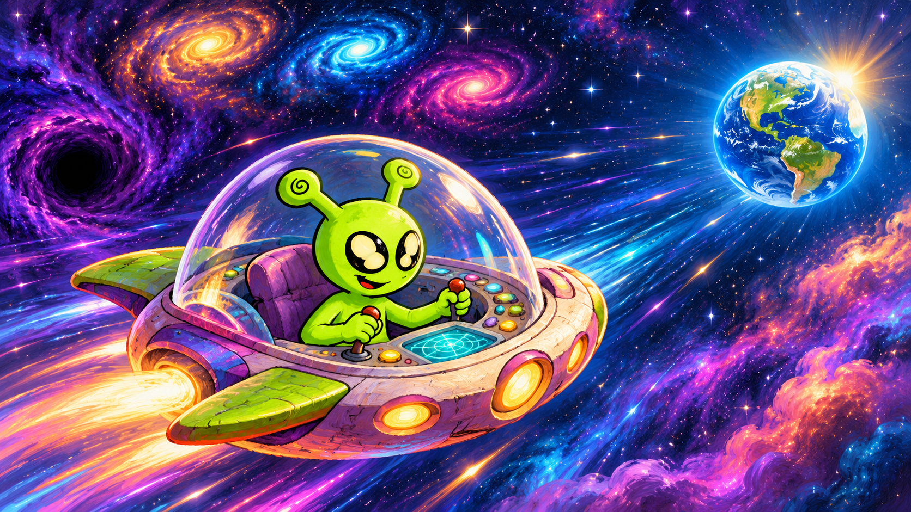
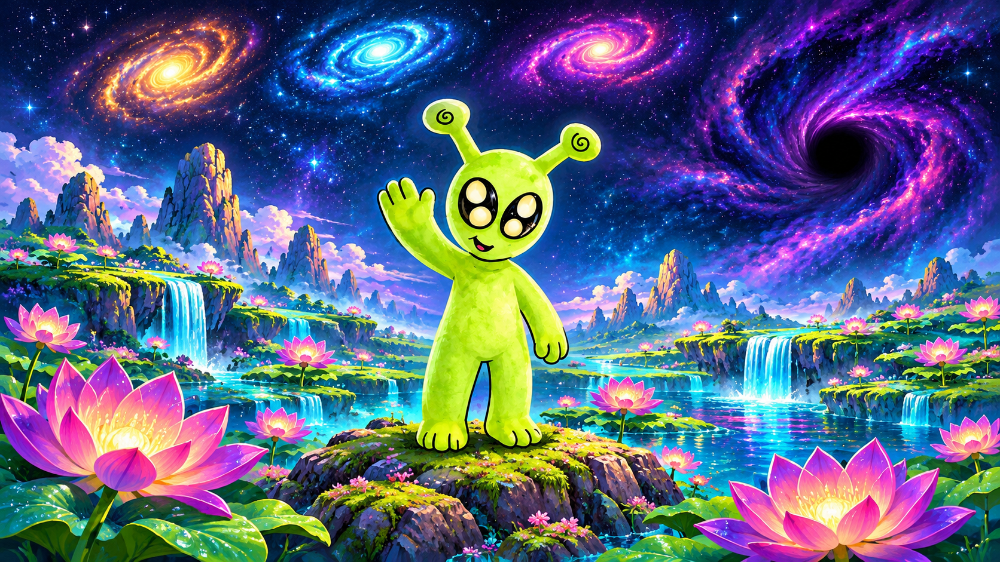
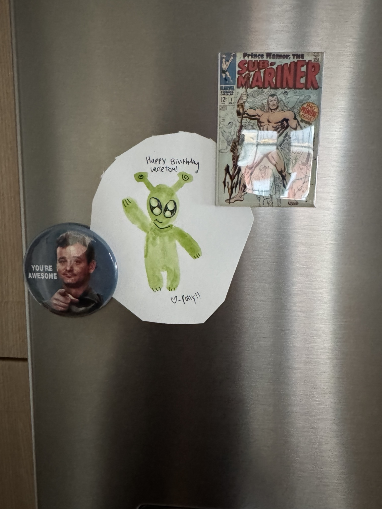
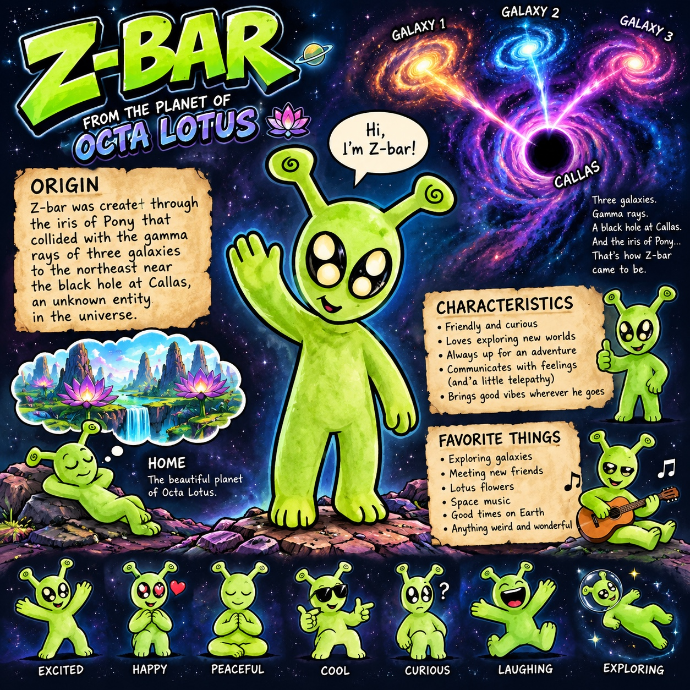
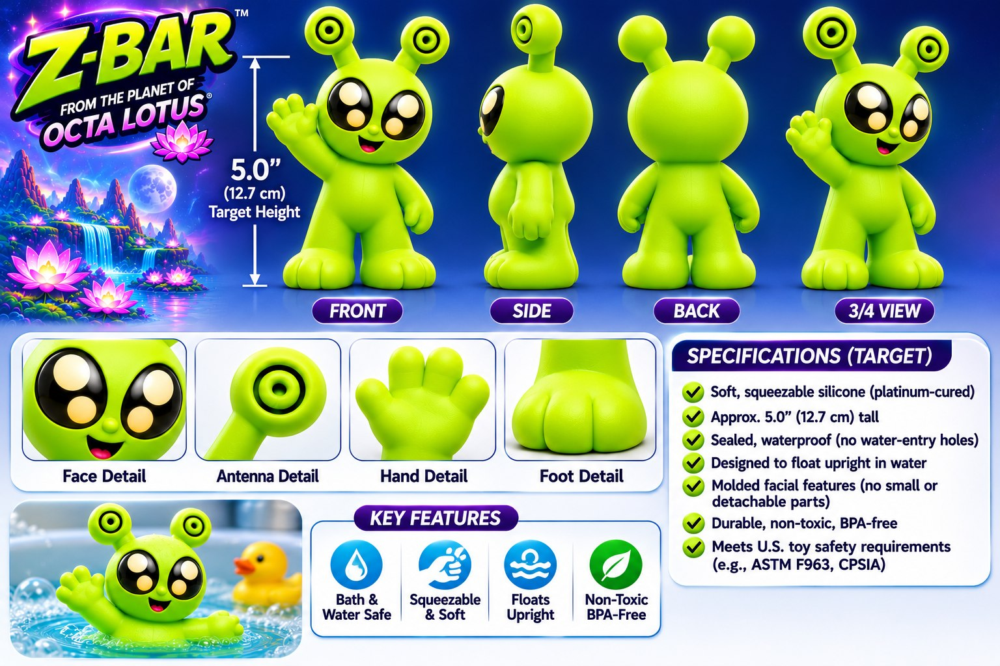
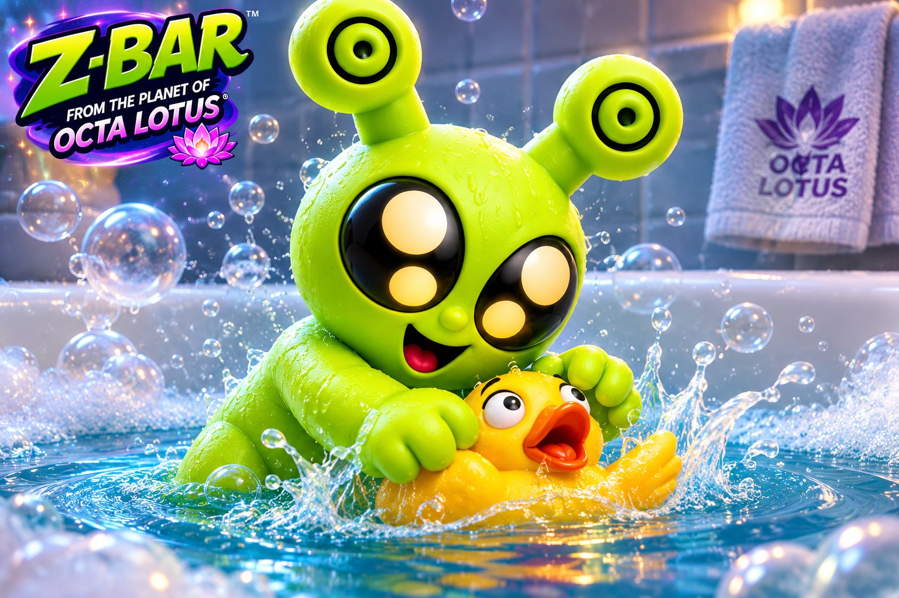

Staff file · Octa Lotus
Z-Bar
A friendly traveler from Octa Lotus, now racing toward Earth in search of someone lost.

The search for Z-Bot
Z-Bot, the lost OctoLoctolite, was last headed for Earth to contact Pony. Pony holds a riddle that needs to be solved. Z-Bar has set a course through the universe to find Z-Bot before the trail goes cold.
Meet Z-Bar
From Octa Lotus, he brings curiosity, friendship, and a talent for finding his way into strange places.

His origin
Z-Bar was created when Pony’s iris collided with gamma rays from three galaxies near the black hole at Callas, an unknown entity in the universe. His home is the planet Octa Lotus.
Curious and friendly, he travels between worlds and makes friends along the way.

Pony’s original drawing of Z-Bar.
Original Z-Bar character sheet

Meet the Toy
The standing Z-Bar bath toy concept is designed to be about five inches tall, with soft, squeezable silicone and a sealed body intended to float upright.


Bath-Time Adventures
Z-Bar makes a splash with a rubber duck.
